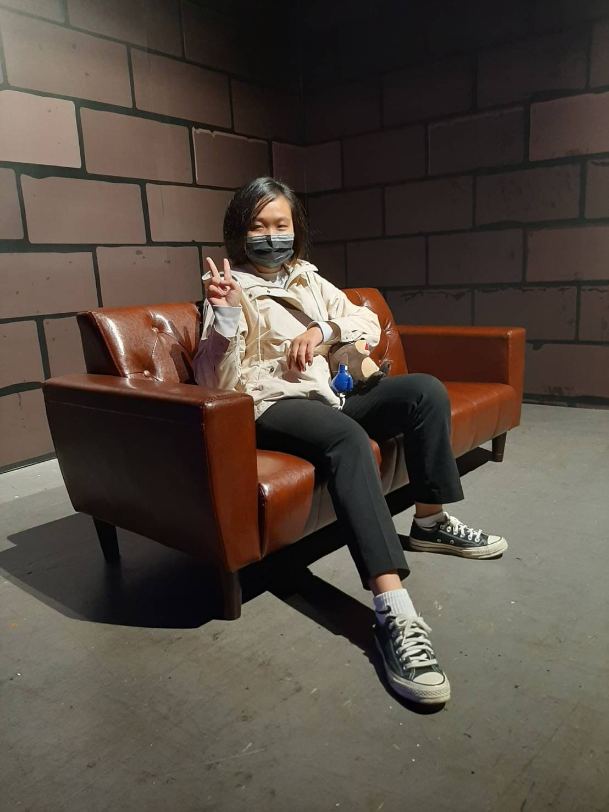
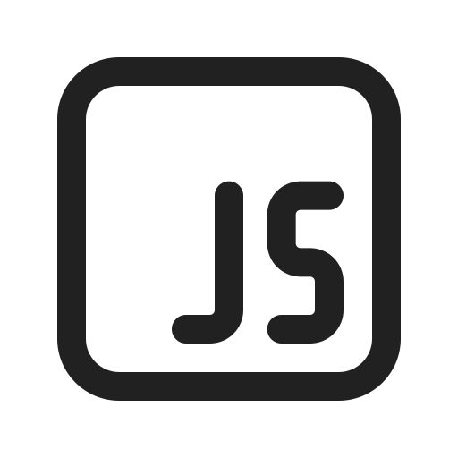
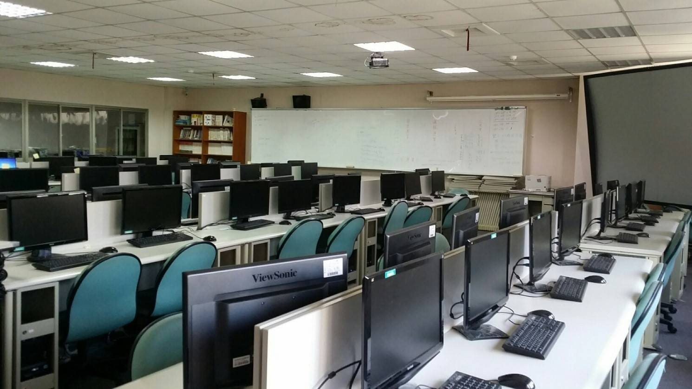

李晏慈
Never do things at will, or you'll be sorry.
Phone: 09xxxxxxxx
Email: xxx@gamil.com
Profile
我是一個對程式有熱情的人，喜歡解決問題和挑戰自我。
在大學期間，我積極參與各種課程和專案，並在系上工讀，這些經歷讓我不斷成長和學習。我擅長使用C、Python、Java等程式語言，並對數據分析和AI有濃厚的興趣。
我希望能在未來的工作中，將我的數學知識和程式技能結合起來，解決實際問題並創造價值。我相信，通過不斷學習和實踐，我能夠在數據分析和AI領域取得更大的成就。
在大學期間，我積極參與各種課程和專案，並在系上工讀，這些經歷讓我不斷成長和學習。我擅長使用C、Python、Java等程式語言，並對數據分析和AI有濃厚的興趣。
我希望能在未來的工作中，將我的數學知識和程式技能結合起來，解決實際問題並創造價值。我相信，通過不斷學習和實踐，我能夠在數據分析和AI領域取得更大的成就。
Education
應用數學系碩士中原大學 2024 - 2025 |
應用數學系中原大學 2020 - 2024 |
Thesis
一一一一一一一一一一一一一一一一一一一一一一一一一一
OOOOOOOOOOOOOOOOOOOOOOOOO
|
xxxxxxxxxxxxxxxxxxxxxx |
||
|
指導教授:
|
Programming skill
|  | |||
Octave |
Works
專案:大三上系網改造
軟體：WordPress
這是現在的系網，是上學期和同學、指導老師（蔣益庭老師），共同翻修完成的。
在改造的過程中有學習到如何團隊合作、溝通，也學習到一點點的html和css，雖然很累，但成品很漂亮，學校那邊也很滿意，很開心有這樣的機會。
這是現在的系網，是上學期和同學、指導老師（蔣益庭老師），共同翻修完成的。
在改造的過程中有學習到如何團隊合作、溝通，也學習到一點點的html和css，雖然很累，但成品很漂亮，學校那邊也很滿意，很開心有這樣的機會。
安卓程設點餐系統
課程：安卓程式語言
軟體：Android studio
程式：kotlin
這是我和同學對資管系的這門課很有興趣，而去加選的。 整個學習過程有點辛苦，因為我還沒學過java，而kotlin 跟java很像，有些概念很相似，所以我們相比其他同學比較需要花時間，但我學得很開心，在這過程中做出一個點菜系統，並將團體討論出的想法及創意付諸在上面,也共同解決bug，這過程讓我感到很有成就感。
軟體：Android studio
程式：kotlin
這是我和同學對資管系的這門課很有興趣，而去加選的。 整個學習過程有點辛苦，因為我還沒學過java，而kotlin 跟java很像，有些概念很相似，所以我們相比其他同學比較需要花時間，但我學得很開心，在這過程中做出一個點菜系統，並將團體討論出的想法及創意付諸在上面,也共同解決bug，這過程讓我感到很有成就感。
商店網站
課程：網頁程式設計
軟體：Android studio
程式：kotlin
在修習網頁程式設計這門課時，老師有給我們一個專案，就是做一個商店網站，這個專案讓我學習到如何使用html、css、js等語言來製作網頁。 在這個專案中，我們小組分工合作，負責不同的部分。
軟體：Android studio
程式：kotlin
在修習網頁程式設計這門課時，老師有給我們一個專案，就是做一個商店網站，這個專案讓我學習到如何使用html、css、js等語言來製作網頁。 在這個專案中，我們小組分工合作，負責不同的部分。
專題研究: 線上網頁遊戲
大三時，和同學藉著專題研究這門課，做了一個線上網頁遊戲。
論文成果
LINE Bot畫面
Experience
在一年級時有加入過系上羽毛球，也有一起參加過校內校外的比賽，而這張是校外比完賽後的照片，雖然最後沒有得獎，但這是我跟同伴們一起努力地過程。

在一年級時有加入系電，這個社團主要是由學長姐教導學弟妹，讓同學更加了解程式語言的知識及實作，由於自己本身在升大學前沒學習過程式語言，怕自己跟不上之後的課程，剛好系上有這個社團，在經過自身情況評估後，決定參加此社團，也在此社團學到並了解到程式語言，在之後遇到不一樣的程式語言結構後，在掌握上就更加清楚且快速。